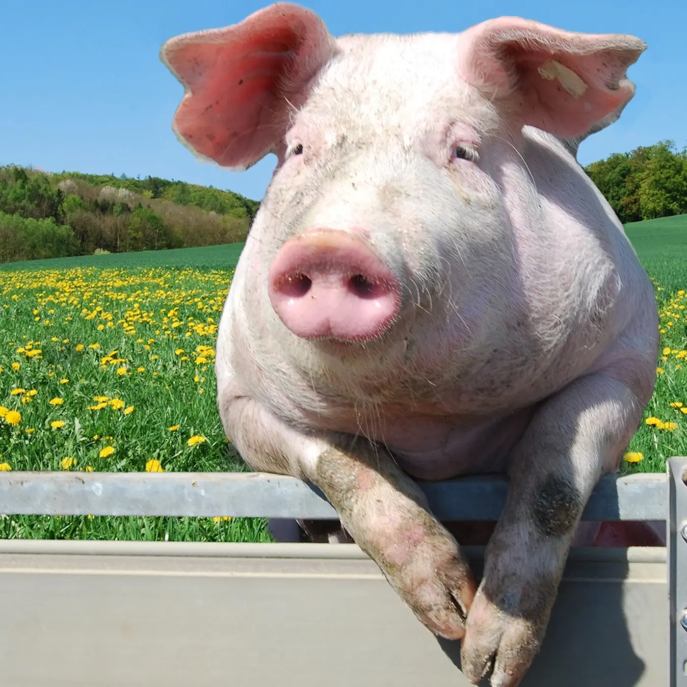

⌕
Understand
We get to know the student, their strengths, challenges, interests and current relationship with learning.
Toucan Learn provides interest-led, engaging online tutoring for students who benefit from support that feels personal, structured and genuinely understood.
Start the intake process, tell us what your child needs, and book a free trial.

We start with the child, not the worksheet. Sessions are designed around their learning style, confidence, interests and educational needs.
We get to know the student, their strengths, challenges, interests and current relationship with learning.
We create a tailored plan rather than forcing every child through the same pre-made route.
We support academic progress alongside confidence, independence, character and resilience.
One-to-one online support across multiple subjects, matched to the learner’s needs, stage and goals.
Tell us about your child →Parents should know exactly what happens next. The plan stays responsive because every session gives us new evidence about what helps the learner engage, understand and progress.
A consistent method. A different route for every child.
Tell us about needs, strengths, interests, current barriers and what has-or hasn't-worked before.
We establish fit, observe how the learner engages and identify the first useful route into learning.
Each session has clear learning aims, delivered through the structure, pace and interests that work for that learner.
You receive what we covered, evidence of progress, the current barrier and the next target—so the plan keeps evolving.
Across more than 50 hours over his final IB year, Toucan supported one Psychology HL student with essay structure, SAQ and ERQ planning, timed writing, revision organisation, exam decisions and Extended Essay direction.
The student did the hard work. Toucan provided consistent structure, targeted practice and a calmer route through the final year.
| Outcome | Mock prediction | Final result |
|---|---|---|
| Psychology HL | 3/7 | 5/7 High grade 5 · 59 marks · two from grade 6 |
| Overall diploma | 29/45 | 37/45 8 points above the mock prediction |
“The best thing I did to help him was to contact you. You made the last year of IB a much more liveable affair for us all.”
Complete the intake form and tell us what kind of support your child needs. No pressure. No commitment. Just a conversation.